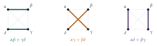

STEP III 2017, 문제 3
계속 읽기 전에 문제를 먼저 읽어 보자. 문제는 STEP Support Programme의 문제 데이터베이스에 있다: step.maths.org/questions/17-s3-q3
도입
이차방정식(quadratic equation)의 근의 공식은 모든 학생이 배운다. 삼차방정식(cubic)과 사차방정식(quartic)의 근의 공식도 존재한다. 이 공식들은 16세기 이탈리아에서 비밀 대결과 우선권을 둘러싼 격렬한 논쟁 속에서 발견되었다. 지롤라모 카르다노(Gerolamo Cardano)는 1545년 저서 Ars Magna(위대한 술법)에서 두 공식을 모두 발표했는데, 삼차방정식의 공식은 (그에게 비밀 유지를 맹세하게 했던) 니콜로 타르탈리아(Niccolò Tartaglia)에게서, 사차방정식의 공식은 자신의 제자 로도비코 페라리(Lodovico Ferrari)에게서 얻은 것이었다. 그 뒤 거의 300년 동안 수학자들은 오차방정식(quintic)의 근의 공식을 찾으려 했지만 헛수고였다.
이 문제는 사차방정식을 푸는 요령을 보여 주며, 이 요령에는 깊은 의미가 담겨 있다. 네 근을 두 개씩 짝짓는 세 가지 방법에 따라 세 개의 새로운 양을 만든다. 이 세 양은 하나의 삼차방정식을 만족하고, 그 삼차방정식은 풀 수 있으며, 그 해로부터 원래의 근을 구할 수 있다. 이 방법이 왜 통하는지, 즉 왜 네 근은 세 개의 양으로 줄일 수 있는데 다섯 근은 같은 방식으로 줄일 수 없는지라는 물음이 갈루아(Galois)를 군론(group theory)의 창시로 이끌었다.
시작하기 전에
네 대상 \(\alpha, \beta, \gamma, \delta\)를 두 쌍으로 나누는 방법은 몇 가지인가?
세 가지이다. \(\{\alpha\beta, \gamma\delta\}\), \(\{\alpha\gamma, \beta\delta\}\), \(\{\alpha\delta, \beta\gamma\}\)이다(그림 6.4.1). 문제에 나오는 세 양 \(\alpha\beta + \gamma\delta\) 등은 이 세 가지 짝짓기에 대응한다. 네 근을 어떻게 재배열하든 세 짝짓기는 자기들끼리 뒤섞일 뿐이다. 따라서 세 양에 대한 대칭식(symmetric expression)은 모두 네 근에 대한 대칭식이 되고, \(p\), \(q\), \(r\), \(s\)로 나타낼 수 있다. 바로 이 때문에 세 양은 계수가 \(p\), \(q\), \(r\), \(s\)만으로 이루어진 삼차방정식을 만족한다.
차근차근 풀기
단계 1 빠진 계수
삼차방정식 \(y^3 + Ay^2 + By + C = 0\)에서 근의 합을 \(A\)로 나타내면 무엇인가? 그리고 \((\alpha\beta + \gamma\delta) + (\alpha\gamma + \beta\delta) + (\alpha\delta + \beta\gamma)\)를 사차방정식의 계수로 나타내면 무엇인가?
삼차방정식의 근의 합은 \(-A\)이다. 세 양의 합은 \(\alpha, \beta, \gamma, \delta\)에서 두 개씩 곱한 여섯 개의 곱을 모두 더한 것이고, 사차식 \(x^4 + px^3 + qx^2 + rx + s\)에서 이 값은 \(q\)이다. 따라서 \(A = -q\)이다.
단계 2 구체적인 삼차방정식
\(p = 0\), \(q = 3\), \(r = -6\), \(s = 10\)이면 삼차방정식은 다음과 같다. \[y^3 - 3y^2 + (0 - 40)y + (120 - 0 - 36) = y^3 - 3y^2 - 40y + 84 = 0.\]
\(84\)의 작은 약수들을 대입해 보라.
\(y = 2\)를 대입하면 \(8 - 12 - 80 + 84 = 0\)이다. 나누어 보면 \(y^3 - 3y^2 - 40y + 84 = (y - 2)(y^2 - y - 42) = (y - 2)(y - 7)(y + 6)\)이다. 가장 큰 근은 \(7\)이므로 \(\alpha\beta + \gamma\delta = 7\)이다.■
단계 3 근의 쌍
\((\alpha + \beta)(\gamma + \delta) = \alpha\gamma + \alpha\delta + \beta\gamma + \beta\delta\)이고, 이는 두 개씩 곱한 여섯 개의 곱의 합에서 \(\alpha\beta + \gamma\delta\)를 뺀 것, 즉 \(q - 7 = 3 - 7 = -4\)이다.
또 \(\alpha\beta \cdot \gamma\delta = \alpha\beta\gamma\delta = s = 10\)이다. 따라서 \(\alpha\beta\)와 \(\gamma\delta\)는 합이 \(7\)이고 곱이 \(10\)이므로 \(t^2 - 7t + 10 = (t - 2)(t - 5)\)의 두 근이다. \(\alpha\beta > \gamma\delta\)이므로 \(\alpha\beta = 5\), \(\gamma\delta = 2\)이다.■
단계 4 사차방정식 풀기
\(\alpha + \beta\)와 \(\gamma + \delta\)를 구하라. 두 값의 합(\(p\)로부터)과 곱(3단계로부터)은 알고 있다. 어느 쪽이 어느 값인지 정하려면 \(r\)을 이용하라.
\(\alpha + \beta + \gamma + \delta = -p = 0\)이고 \((\alpha + \beta)(\gamma + \delta) = -4\)이므로 \(\{\alpha + \beta, \gamma + \delta\} = \{2, -2\}\)이다. 계수 \(r\)은 세 개씩 곱한 네 곱의 합을 준다. 즉 \(\alpha\beta\gamma + \alpha\beta\delta + \alpha\gamma\delta + \beta\gamma\delta = -r = 6\)이다. 이 식은 \(\alpha\beta(\gamma + \delta) + \gamma\delta(\alpha + \beta) = 5(\gamma + \delta) + 2(\alpha + \beta)\)로 쓸 수 있다. \(\alpha + \beta = 2\)이면 이 값은 \(-10 + 4 = -6\)이고, \(\alpha + \beta = -2\)이면 \(10 - 4 = 6\)이다. 따라서 \(\alpha + \beta = -2\), \(\gamma + \delta = 2\)이다.
이제 \(\alpha\), \(\beta\)는 \(t^2 + 2t + 5 = 0\)의 두 근이므로 \(-1 \pm 2\mathrm{i}\)이고, \(\gamma\), \(\delta\)는 \(t^2 - 2t + 2 = 0\)의 두 근이므로 \(1 \pm \mathrm{i}\)이다. 네 근은 다음과 같다. \[x = -1 \pm 2\mathrm{i}, \qquad x = 1 \pm \mathrm{i}. \qed\] 검산: \((x^2 + 2x + 5)(x^2 - 2x + 2) = x^4 + 3x^2 - 6x + 10\).
돌아보기
대칭함수. 모든 단계에서 근과 계수의 관계, 즉 근의 합과 곱을 이용했다.
차수를 낮춰라. 사차방정식 문제가 삼차방정식(분해 삼차방정식(resolvent cubic))이 되었고, 다시 두 개의 이차방정식이 되었다.
모든 정보를 활용하라. \(p\)와 \(q\)는 합과 곱을 주었고, \(s\)는 \(\alpha\beta\)와 \(\gamma\delta\)를 구분해 주었으며, \(r\)은 어느 쌍이 어느 합에 대응하는지 정해 주었다.
숨은 수학
1770년 조제프루이 라그랑주(Joseph-Louis Lagrange)는 삼차방정식과 사차방정식의 풀이법이 왜 통하는지 물었고, 그 답을 근의 치환(permutation)에서 찾았다. 네 근을 재배열하는 방법은 \(24\)가지이다. 이 모든 재배열에서 세 양 \(y_1 = \alpha\beta + \gamma\delta\), \(y_2 = \alpha\gamma + \beta\delta\), \(y_3 = \alpha\delta + \beta\gamma\)는 자기들끼리 뒤섞일 뿐이다. 네 근의 각 재배열은 세 짝짓기의 재배열을 유도한다(그림 6.4.1). 따라서 이 세 양은 계수가 근에 대해 대칭인 \(3\)차 다항식을 만족한다. 현대적인 언어로 말하면, 대칭군(symmetric group) \(S_4\)(\(24\)개의 모든 치환)에서 \(S_3\)(짝짓기의 \(6\)가지 치환)로 가는 전사 군 준동형사상(group homomorphism)이 존재하며, 이것이 사차방정식을 삼차방정식으로 줄일 수 있는 이유이다.

오차방정식
라그랑주는 다섯 근에 대해서도 근의 치환에 따라 몇 가지 값만 취하는 비슷한 양을 찾으려 했지만, 쓸모 있는 것을 찾지 못했다. 1799년 파올로 루피니(Paolo Ruffini)가, 그리고 1824년 닐스 헨리크 아벨(Niels Henrik Abel)이 (증명을 완성하여) 사칙연산과 거듭제곱근(radical)만으로 오차방정식의 근을 나타내는 일반적인 공식은 존재하지 않음을 보였다. 몇 년 뒤 에바리스트 갈루아는 어떤 다항식이 거듭제곱근으로 풀리는지 정확히 설명했다. 바로 근의 대칭군을 특정한 방식으로 더 단순한 조각들로 분해할 수 있는 다항식이다. 대칭군 \(S_4\)는 (\(S_3\)와 더 작은 군들을 거쳐) 분해할 수 있지만, \(S_5\)는 더 이상 분해할 수 없는 크기 \(60\)의 “단순(simple)” 조각을 포함하므로 분해할 수 없다. 갈루아는 1832년 스무 살의 나이로 결투에서 목숨을 잃기 전날 밤, 서둘러 자신의 이론을 글로 남겼다. 이 이론은 오늘날 수학과 학부 과정의 백미 중 하나이며, 보통 3학년에 배운다.
삼차방정식 풀기
삼차방정식 자체도 비슷한 요령으로 풀 수 있다. 축약 삼차식(depressed cubic) \(x^3 - 3px + q\)를 두 완전세제곱식의 결합으로 나타내면 이차방정식으로 줄어든다. 이것이 연습문제에 있는 2011년 문제의 방법이며, 카르다노의 공식과 동치이다. 삼차방정식이 세 실근을 가질 때에도 이 공식은 계산 과정에서 복소수(complex number)를 필요로 하는데, 바로 이 현상 때문에 수학자들은 복소수를 진지하게 받아들일 수밖에 없었다(5장의 도입 참고).
사고 기술
근으로 만든 어떤 양들이 근을 치환할 때 자기들끼리만 치환된다면, 그 양들은 계수를 계산할 수 있는 더 낮은 차수의 다항식을 만족한다.
이것이 갈루아 이론(Galois theory)의 씨앗이다. 방정식을 이해하려면 그 근의 대칭을 이해하라.
더 도전하기
삼차방정식 확인하기. \(y_1 = \alpha\beta + \gamma\delta\) 등일 때 \(y_1y_2 + y_2y_3 + y_3y_1 = pr - 4s\)임을 확인하라. (전개한 뒤 \(\sum\alpha = -p\), \(\sum\alpha\beta\gamma = -r\), \(\alpha\beta\gamma\delta = s\)를 이용하라.)
세제곱의 합으로 본 삼차방정식. STEP III 2011, 문제 3을 풀어 보라. 이 문제는 삼차방정식을 두 세제곱식의 결합으로 나타내어 푸는데, 이 절의 방법과는 상당히 다른 길이다. 답을 수치적으로 확인해 보라.
또 하나의 사차방정식. 이 절의 방법으로 \(x^4 - 4x^3 + 7x^2 - 6x + 2 = 0\)을 풀어라. (분해 삼차방정식의 한 근은 작은 정수이다.)
치환 세기. \(\alpha, \beta, \gamma, \delta\)의 \(24\)가지 치환 가운데 짝짓기 \(\{\alpha\beta, \gamma\delta\}\)를 자기 자신으로 보내는 것을 모두 찾아라. 그런 치환이 \(8\)개임을 보여라. (이들은 \(S_4\)의 부분군(subgroup)을 이룬다.)
더 읽을거리
Mario Livio, The Equation That Couldn’t Be Solved (Simon & Schuster). 오차방정식과 군론의 탄생 이야기를 일반 독자를 위해 풀어낸 책이다.
Ian Stewart, Why Beauty Is Truth: A History of Symmetry (Basic Books). 바빌로니아의 방정식에서 갈루아와 그 너머까지 다룬다.
Ian Stewart, Galois Theory (CRC Press). 학부 교재로, 바로 이 내용을 다루는 역사적 도입부가 있다.